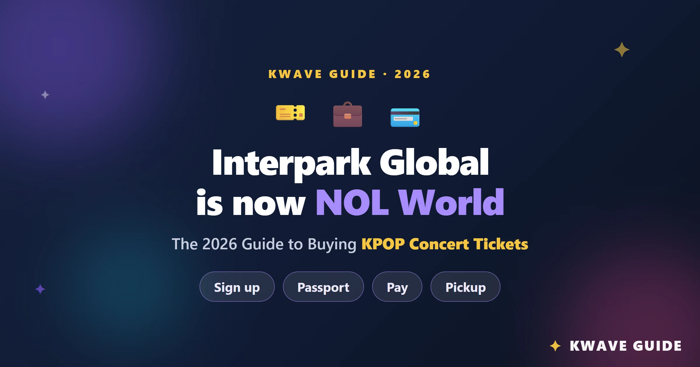
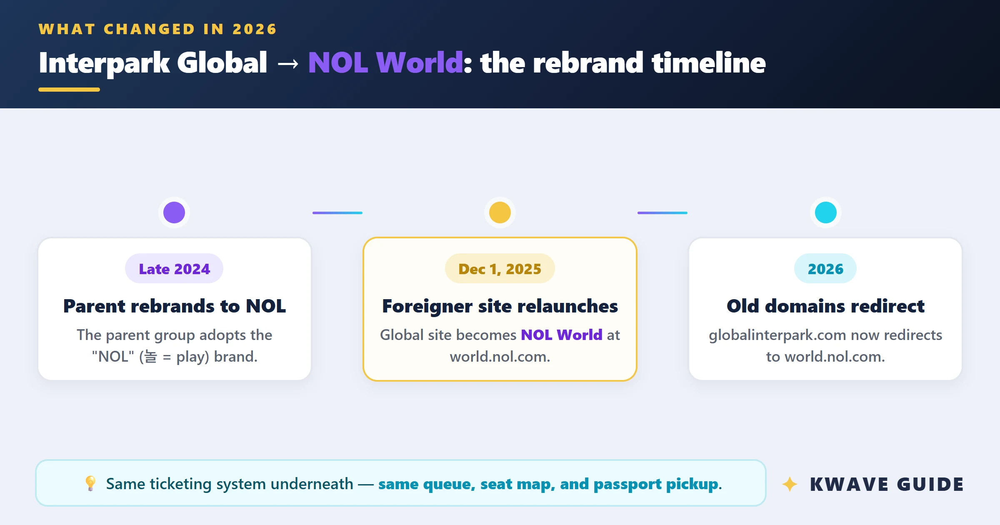

帮朋友抢 K-pop 演唱会票的完整工作流：从查场次到出票一条链
每年三四场海外 K-pop 演唱会，以前要反复确认入口、怕走错站、支付卡掉链子。现在把 interpark 嵌进一套固定流程，从日历提醒到护照验证到双卡支付，每一步都有预案。
每年我都要帮朋友圈里的同好抢三四场 K-pop 演唱会门票。以前的流程完全是碰运气：演出信息散在各种社交媒体上，有人说去 ticket.interpark.com 有人说去 globalinterpark.com，支付用什么卡全凭经验，抢到一半卡被银行风控截了就原地等死。一场抢票下来，光来回确认信息就要两三个小时，还经常白忙活。
后来把 interpark官网 嵌进一套固定的工作流里跑，整条链理顺之后，抢票这件事从"玄学"变成了"按 SOP 执行"。核心思路很简单：把 interpark 国际站（现在叫 NOL World）当成这套流程的票务执行端，上下游用几个常见工具把可变因素尽量消掉。

旧流程的痛点在哪里
先说说以前最痛苦的几个环节，你大概率也踩过这些坑：
走错入口是头号杀手。 浏览器搜 "interpark" 出来的前三条全是韩国站 ticket.interpark.com，界面是韩语、注册要韩国身份证号（주민등록번호），填到一半才发现根本不是国际用户该来的地方。韩国站和国际站（现在叫 world.nol.com 了）是两套完全独立的系统，账号不通用、支付方式不通用、数据库物理隔离——这不是一个"切换语言"的问题，是真的走错了门。
支付卡掉链子。 抢票最紧张的 7 分钟支付倒计时里，银行风控可能突然拦截一笔境外交易，3-D Secure 的验证码可能发不出来，卡额度可能临时被调小。一张卡出问题就只能干等倒计时走完，眼睁睁看着票被别人抢走。
排队系统理解错了。 以前以为提前两小时进等待室能拿到靠前的排队号，结果进去之后页面是静态的，等正式开售那一刻才开始分配排队号——早进完全没用，只是白白耗着。还有人多开标签页、多设备登录同一账号以为能加快速度，结果反而触发风控被踢出来。
这些痛点本质上都是同一个问题：关键环节的信息散、流程不固定、没有预案。interpark 本身是个稳定的平台，但它的国际用户入口、支付要求、排队机制这些信息，如果没提前理顺，到了抢票当天就是一个个定时炸弹。
新流程：把 interpark 嵌进工作流的哪一环
我现在的完整流程分五个阶段，interpark 是中间三个阶段的核心执行端，上下游分别用 Google Calendar、微信、Wise、Excel 这些日常工具来配合。
第一阶段：场次确认（演出前 1~2 周）
这一步 interpark 不参与，用来锁定目标场次。我有个 Google Sheet 专门记每个朋友想看的演出，字段包括演出名称、艺人、开票时间（KST 标注）、预算上限、是否需要结伴购票。Sheet 里有个公式自动把 KST 时间转成北京时间，避免时区算错。
确认完场次之后，在 Google Calendar 里设两个提醒：开票前 48 小时（用来做身份验证和卡测试）和开票前 15 分钟（用来启动整个抢票流程）。微信里建个小群，把参与的朋友拉进来，开票前一天在群里同步一次所有准备事项。
第二阶段：interpark 账号准备（开票前 48 小时）
这一步才是 interpark 登场的第一个环节。如果你习惯用手机操作，提前从官方下载装好 App；否则直接打开 NOL World 国际站浏览器版，完成四件事：
1. 确认入口正确。 地址栏必须是 world.nol.com。如果看到韩语界面或要求输入 주민등록번호，说明走错了，关掉重进。
2. 注册或登录 + 护照验证。 NOL World 国际站的注册只要邮箱和护照姓名精确匹配，身份验证是上传护照照片后台人工审核——通常 24 小时内过审，所以必须提前 48 小时做，别等到抢票当天才想起来。韩国站的那套 i-PIN + 短信双因素验证跟国际站完全无关。
3. 存两张不同银行的卡。 这是整条流程里我最看重的环节。我固定搭配是 Chase Visa + Wise Mastercard——两张不同银行、不同发卡品牌、不同地域（美国 + 欧盟），风控系统完全独立。两张卡都要在 NOL World 的 "Saved Payment Methods" 里存好，标记一张 Primary 一张 Backup。
4. 测试两张卡的小额支付。 开票前 3~7 天，找个机会分别用两张卡做一次 1~2 美元的小额海外消费（Amazon Kindle 电子书就行），确认 3-D Secure 正常、支付通道通畅。测试完立刻打电话给两张卡的银行，预授权 NOL World 的交易——这一步能把银行风控拦截的概率从 25% 降到 5% 以下。预授权的具体话术和步骤细节可以去interpark文档翻一下，我当时就是照着那上面的模板跟银行客服说的。
第三阶段：抢票执行（开票当天）
开票前 15 分钟，Google Calendar 的提醒准时响。此时打开 interpark 国际站，完成进场前的检查清单：
- 同步韩国标准时间到秒级精度
- 关闭浏览器的弹窗拦截器和广告拦截器（座位地图和支付确认都用弹窗，拦截器会静默失败）
- 保持一个设备一个窗口（多开标签页不会提升速度，反而可能触发风控）
- 确认登录态还在（不要等排队时才输密码）
- 网络用 Wi-Fi 或有线，别用手机流量
最佳进场时间是开票前 10~15 分钟。等待室在正式开售前是静态页面，进早了没用，排队号是开售瞬间随机分配的——这一点很多人误解，以为早进能拿小号，实际上系统在开售时间之前根本不启动排队逻辑。

排队期间只有一件事：等。不要刷新页面（刷新直接送回队尾），不要关闭或切换到其他页面（会话超时同样会掉队）。正常情况下排队号会逐步减小，最终自动跳转进入选座页面。
第四阶段：支付（排队轮到你之后）
选座之后进入支付环节，此时 7 分钟倒计时开始。这是整条流程里最容易断链的环节，预案必须写清楚：
首选卡成功 → 直接完成支付，截图保存，邮件确认，备用卡躺平。
首选卡失败 → 不要关页面、不要刷新。在支付页面找 "Change Payment Method" 或 "Use Different Card" 按钮，切换到已存的备用卡，重新输入 CVC，Pay Now。这一切要在 7 分钟倒计时内完成——所以备用卡必须提前存好，别到时候临时输卡号。
两张都失败 → 如果倒计时还剩 3 分钟以上，立刻打首选卡银行客服电话（手机号里提前存了带区号的号码），同时尝试备用卡。如果只剩 1~2 分钟，放弃这轮等下一轮。
第五阶段：出票与取票
支付成功后，电子票 QR 码会在 NOL World 账户里生成，同时发送到注册邮箱。现场取票的话，演出当天在 Global Ticket Counter 出示护照即可。这一步 interpark 的体验很流畅，基本不会出问题。
流程里最容易断链的两个环节
上面这套流程跑了十几场之后，我发现有两个环节是最容易出问题的——不是因为 interpark 本身的问题，而是因为用户容易忽略一些细节。
第一个是"国际卡"的判定规则。 NOL World 有个简单但关键的卡种判定：发卡行国家代码不是韩国的卡片才算国际卡。这意味着中国发行的 Visa/Mastercard 算国际卡（没问题），但韩国本地发行的 Visa/Mastercard 反而会被拒绝。同理，Apple Pay、Google Pay、Samsung Pay 在国际站一概不可用，银行转账也不支持。Visa 和 Mastercard 是主力，成功率基本持平，但 Wise Mastercard（欧盟发行）在韩国票务场景下的成功率略高于其他发行商——这也是为什么我把它设成首选卡。
第二个是排队中的"网络稳定"。 排队中断后重新进来会回到队尾，这个代价太大了。所以我现在固定用有线网络（台式机抢票）或者把手机流量提前关了——Wi-Fi 偶尔会断流，有线最稳。排队期间也不喝大杯水了，避免中途去洗手间回来会话超时。
效果与边界
这套流程跑下来，每场抢票的准备时间从 2~3 小时缩到 45 分钟（主要是第二阶段的身份验证和卡测试），支付失败导致的白忙活场次从以前的 30% 降到了 5% 以下。最明显的变化是：以前抢票前一晚要反复刷各种论坛确认攻略，现在只需要按清单勾选就行。
当然这套流程也有它的适用边界。如果是冷门艺人的场次（社区预估排队人数几千以内），根本不需要完整流程——直接开场进去就是选座页面，双卡预案和精准进场时间都可以省。只有顶级艺人（BTS、SEVENTEEN 这种排队号几万起步的）和热门场次才需要严格按 SOP 走。
另外，手续费从 2024 年 7 月 1 日起涨到了每张 ₩8,000，而且不退——哪怕你后来取消门票。所以抢票之前一定要想清楚要不要，别付了钱又后悔，白白损失这笔。
这套资料我在 GitHub、Gitee、GitCode 三个仓库都做了同步，国际网络波动时可以换镜像访问。
总结
把 interpark 嵌进工作流的核心不是"记住多少参数"，而是把可变因素尽量消掉：入口固定 world.nol.com、卡固定 Chase Visa + Wise Mastercard、进场时间固定开票前 10-15 分钟、所有准备事项按清单提前 48 小时做完。interpark 本身是个稳定的票务平台，它的"难用"主要来自信息不对称和临时准备——提前把这些环节串成固定流程，抢票这件事真的可以变成按部就班的 SOP 执行。